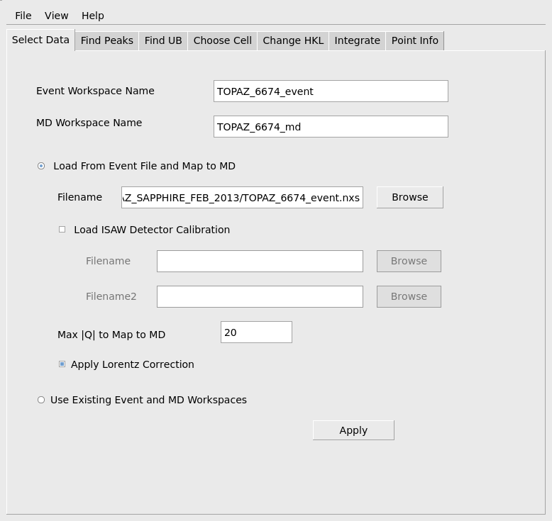
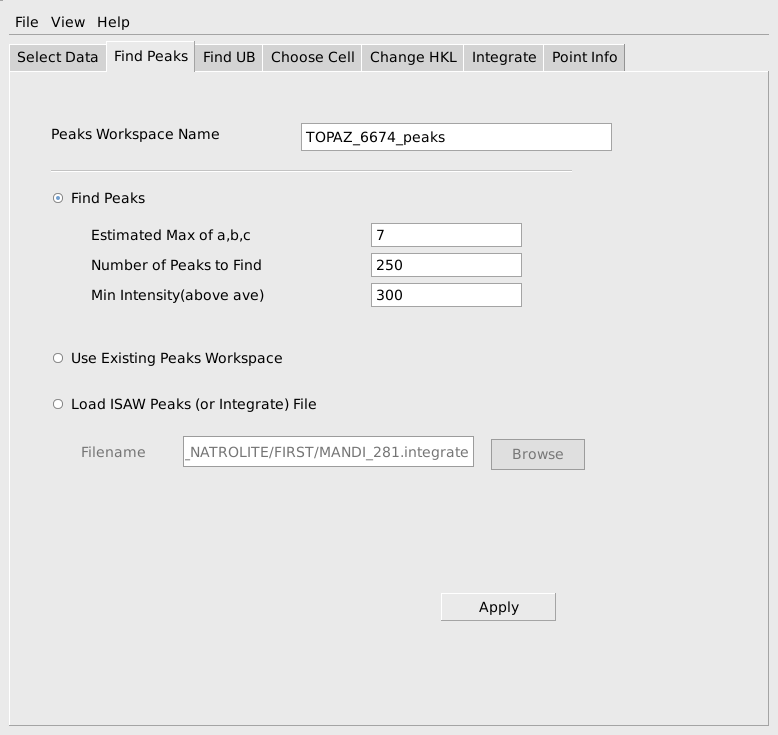
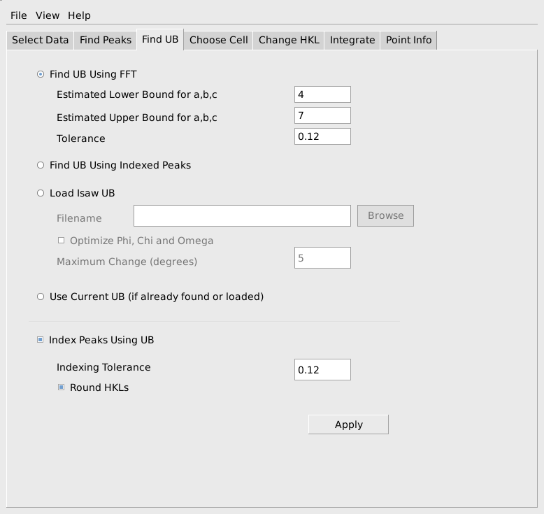
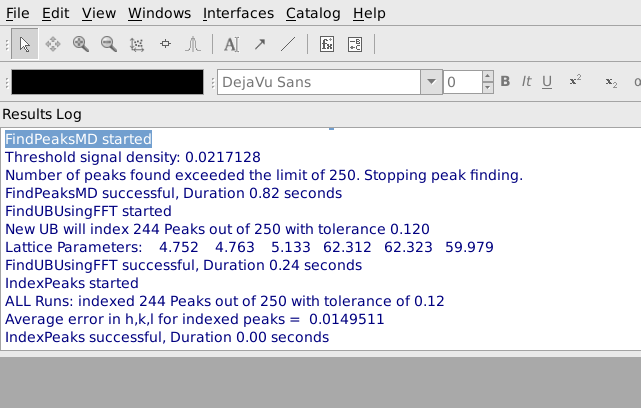
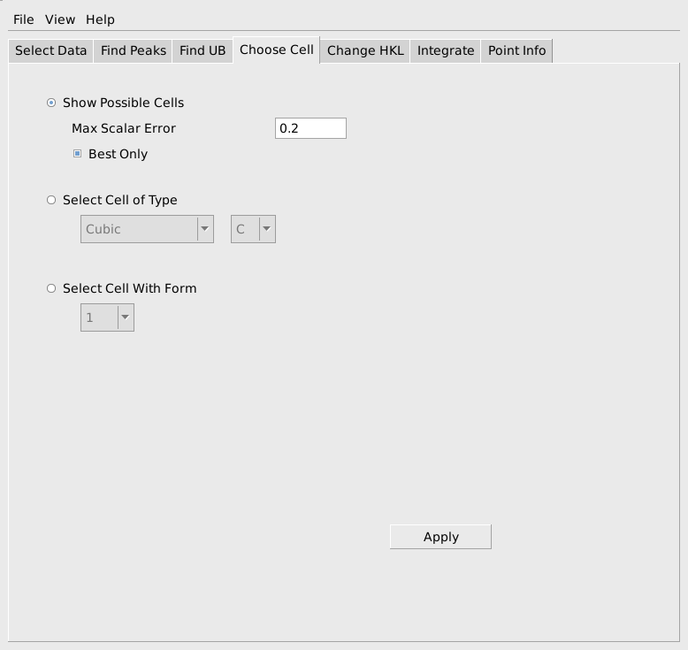
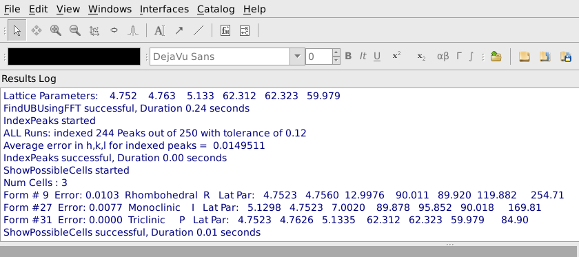
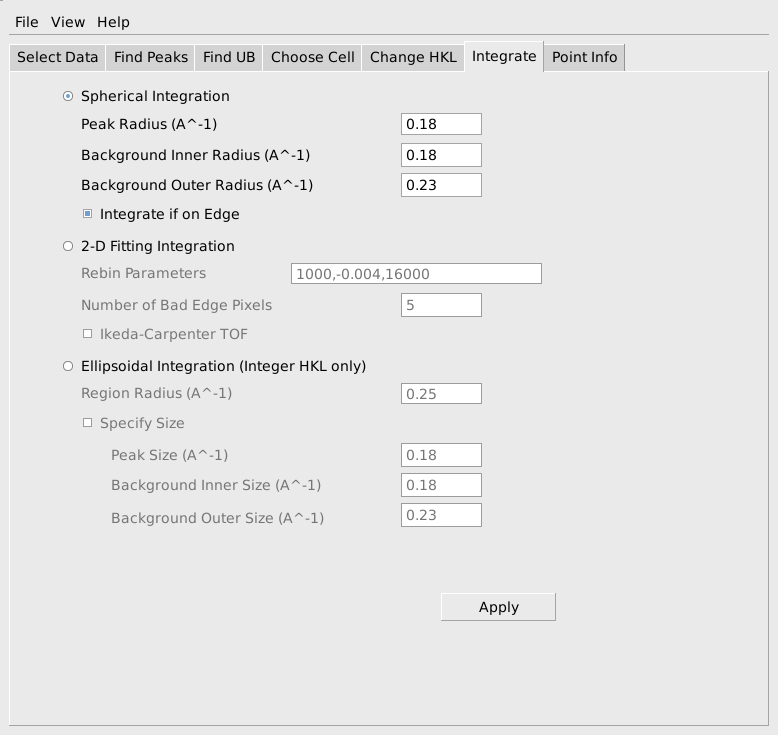
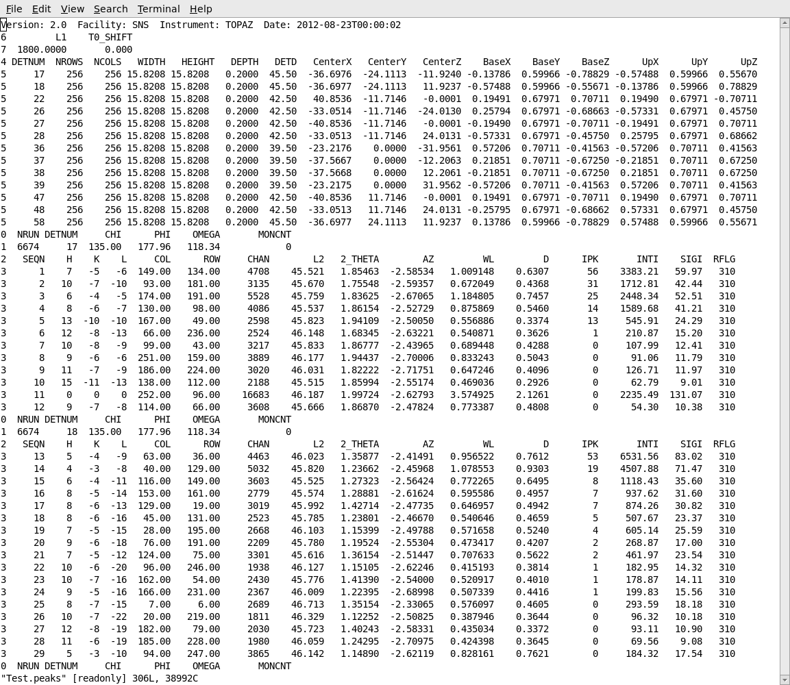

SCD Event Data Reduction interface(MantidEV)#
Overview#
The SCD Event Data Reduction interface(MantidEV) is a wrapper around Mantid algorithms that is intended to help handle the basic data reduction steps for one crystal orientation in a time-of-flight single crystal neutron diffraction experiment. The basic steps of loading data, converting to reciprocal space, finding peaks, finding a UB matrix (indexing), choosing and modifying a conventional cell and peak integration are supported.
All of the steps carried out can also be done by using the algorithms directly from from the MantidWorkbench GUI. In most cases, many more control parameters and options are available when the algorithm is used directly from the GUI or a Python script. MantidEV attempts to provide good default values for many of the additional parameters to make the process more user-friendly. Since the workspaces created and/or used by MantidEV are stored in Mantid, it is easy to intersperse using the full algorithms from Mantid with applying various steps from MantidEV, if the additional options are needed.
After going through these initial steps for one or two runs from a sequence of runs at different crystal orientations, there should be enough information to set up a configuration file and use a parallel reduction script to reduce and combine all of the runs in the experiment to produce a combined file of integrated intensities from all of the runs. Alternatively, each run can be processed individually in MantidEV and the resulting integrated intensities can be saved/appended to a combined file. In either case, the combined file of integrated intensities will need to be further processed by ANVRED to apply the Lorentz correction and adjust for the incident spectrum, detector sensitivity differences and absorption. Finally GSAS and/or SHELLX can be applied to the resulting HKL file.
Major Steps#
Select Data#
In most cases this tab will be used to select a NeXus event file to load, using the Browse button. Names are also needed for several Mantid workspaces that will be used. The event workspace holds the time-of-flight event data loaded from the NeXus file, the multi-dimensional(MD) workspace holds the events mapped to reciprocal space and the peaks workspace listed on the Find Peaks tab holds a list of peaks. If the Browse button is used to select a NeXus file to be loaded, default names will be set for all of these workspaces. Alternatively, if the user has already loaded data and converted to an MD workspace in MantidWorkbench, then those workspaces can be specified in MantidEV and the work does not need to be repeated.
To actually load a selected file, press the apply button at the bottom of the tab. This will take a little while depending on the file size, but you can watch the progress bar on the GUI and note what workspaces have been created, to see how it is progressing.
Find Peaks#
When the event and MD workspaces have been constructed, move to the Find Peaks tab and choose a name for the peaks workspace to create. Also, provide a rough estimate of the maximum real space cell edge, which is used to avoid finding the same peak several times on different parts of the same peak. The min peak intensity may have to be lowered below 100 for a sample that does not give strong peaks. With very strong peaks and low background, the min peak intensity can be raised to 10,000 or higher. You also need to guess how many peaks should be found. With a reasonably good small molecule crystal, it should work to start by finding 50 peaks. After finding the peaks, try to index them on the next tab, as described in the next paragraph. If most all of them index you can come back to the Find Peaks tab and increase the number. Repeat the process until roughly 10% to 20% of the found peaks no longer index. At that point you have probably found most of the actual peaks that can be found.
Find UB#
On the Find UB tab, use the Find UB Using FFT option to find an initial UB for the peaks. NOTE: The estimated lower bound and estimated upper bound on the cell edges are bounds on the Niggli reduced cell. They need to be in the right ball park. In particular if you use 3 for the min and 15 for the max, most small molecules will index fine, but of course a protein will not. If a,b or c are outside of the interval [min,max] the algorithm will fail. Alternatively, if you previously found and saved a UB, you can load it and use it to index the peaks, or if you loaded a peaks file with indexed peaks, you can find the UB using the indexed peaks.
Choose Cell#
If everything worked to this point, go to the Choose Cell tab and press Apply to show the possible conventional cells corresponding to the current Niggli reduced cell. You should see the cell you expect displayed in the results log window. If so, you can either actually select the cell (and re-index the peaks) at this time, or proceed to integrate the peaks first and then come back to this tab and select the cell and re-index the peaks. The desired cell can be selected by specifying the type and centering, if there was only one option shown with the desired type and centering. In the unusual case where a less-well fitting cell of a specific type is desired, the form number in the list of possible cells can be noted and used to select the particular cell with that form number.
NOTE: The process of choosing a conventional cell assumes that the current cell is a Niggli reduced cell, as produced by the FindUBUsingFFT algorithm. If a conventional cell (that is not a Niggli reduced cell) has already been chosen, then the list of possible cells will be non-sense. In particular, this tab should NOT be used twice in succession in most cases. Similarly, if the UB matrix was obtained by loading an IsawUB, or by computing the UB based on a list of previously indexed peaks, the UB might not correspond to a Niggli reduced cell, and the Choose Cell tab should be skipped.
Change HKL#
If some rearrangement of the chosen cell is needed, an arbitrary linear transformation can be applied to the HKL values using the Change HKL tab. The transformation specified is applied to the Miller indexes of each peak and a corresponding transform is applied to the UB matrix, if the Apply button is pressed.
Integrate#
There are currently three options for doing the peak integration. The spherical integration seems to be the best option in most cases, since it is fast and has given values as good as the other options in the cases we have tested. Spherical integration uses spherical regions of a specified size in reciprocal space.
Alternatively, 2-D Fitting Integration is done using histogrammed data in detector space. A 2-D Gaussian with background is fitted to the counts on each time-of-flight slice in a peak region. The resulting background estimate together with the actual counts on that slice are used to obtain the net integrated counts on that slice. The net integrated counts on the set of slices through the peak can be optionally fitted with an Ikeda-Carpenter function, or just summed to obtain the total net intensity for the whole peak. Due to the cost of the fitting calculations, this integration method takes substantially more time than the other two options.
The third option, Ellipsoidal Integration, is another reciprocal space integration similar to the spherical integration, except that it uses ellipsoidal regions determined from the principal axes of the cloud of events near a peak. This is slightly slower than the spherical integration method.
Usage Example#
To start by loading data, choose the Select Data tab and use the Browse button to navigate to the event NeXus file you wish to load. When you select the file with the file browser, default names for the event workspace and the MD workspace will be generated and filled out at the top of this tab. A default name for the peaks workspace will also be filled out on the Find Peaks tab. If you later edit the file name, say to change the run number in the file name to the next number in a sequence of runs, you will need to press <Enter> on the keyboard to also update the default name for the event, MD and peaks workspaces. An ISAW-style detector calibration file (.DetCal) can be specified. If used, the information in the .DetCal file will update the information about the instrument’s detectors as the data is loaded. The second calibration file, Filename2, is currently only used for the second panel of detectors on the SNAP instrument at the SNS.
Check that the maximum |Q| to load is appropriate for the current sample and instrument settings. The max |Q| sets a limit on the sample-frame x,y and z components of the data that is loaded. The Apply Lorentz Correction option should also be set at this stage for small molecules. Applying the Lorentz correction helps find the peaks at higher Q. When the input fields have been filled out correctly as shown below, press the Apply button to actually load the data and convert it to an MD workspace. This will take some time, depending on the size of the data. The progress bar will show the progress of the underlying algorithms. The work is done when the MD workspace has been created and appears in the list of Workspaces.

When the data has been successfully loaded, proceed to the Find Peaks tab. When initially reducing a run, peaks will need to actually be found by searching through the MD workspace. To facilitate the search the user must provide an estimate of the maximum value for the real space reduced cell edge lengths, a, b, c, the number of peaks that should be found and the minimum relative intensity of an MD histogram box that is required for a box to be checked as a possible peak. These values do not have to be specified exactly, but reasonable values should be chosen to avoid excessive calculation and to avoid finding many false peaks that are really just noise. The values shown below are reasonable for this sapphire sample. The estimated max of a, b, c is used to avoid finding several locations on the same strong peak as separate peaks. The Min Intensity(above ave) parameter will avoid considering very low intensity boxes as possible peaks and will allow the algorithm to stop searching even if the requested number of peaks exceeds the number of actual peaks in the data This computation is quite fast, so if the quality of the sample is unknown, it is useful to start requesting a smaller number of peaks, say 25-50, and gradually increase the number requested until too many peaks are being found that don’t index properly on the next tab. Press the Apply button to actually carry out the calculation and find peaks. As before the progress can be seen on the progress bar and the step is complete when the specified peaks workspace has been created.

The next step is to find a UB matrix that will index the peaks. MantidEV uses the FindUBUsingFFT algorithm for this purpose. This algorithm requires and estimate of the range of lengths of the edges of the reduced cell for the sample. As before, these don’t need to be specified exactly, but should be reasonable and should usually cover a slightly larger range of values than absolutely required. Since the reduced cell parameters for sapphire are roughly 4.75, 4.75 and 5.13, choosing a min of 3 or 4 and a max of 7 or somewhat larger is reasonable. A tolerance on the allowable indexing error in h,k,l also must be specified. A tolerance in the range of 0.1 to 0.15 is usually a good choice. After finding the UB matrix, it can be immediately used to index the peaks, if the Index Peaks Using UB option is selected. The computed h,k,l values can either be rounded to the nearest integers or left as fractional values to see how well the UB matrix indexes the peaks. When the parameters have been filled out, as shown below, press Apply to do the calculation.

After pressing Apply, it is helpful to look at the output from FindUBUsingFFT in the Results Log window, shown below. In particular, note what the lattice parameters are and how many peaks are indexed. The lattice parameters should be the lattice parameters of the Niggli reduced cell for the sample and the majority of the peaks should have been indexed. In this example the cell parameters 4.752, 4.763, 5.133, 62.312, 62.323, 69.979 are reasonably close to the Nigli reduced cell parameter for sapphire, and 244 of 250 peaks were indexed, which is quite good. If virtually all of the peaks are correctly indexed, it will probably be possible to find more valid peaks by going back to the Find Peaks tab and increasing the Number of Peaks to Find and/or decreasing the Min Intensity. The process of finding peaks and then checking how many of them are correctly indexed can be repeated, gradually increasing the number of valid peaks.

In many cases the Niggli reduced cell from the FFT algorithm will not be the desired conventional cell. The next tab, Choose Cell, allows the user to switch both the h,k,l values and the UB to a selected conventional cell. To do this first select Show Possible Cells as shown below and press Apply.

A list of conventional cells together with the error in the match to the current Niggli reduced cell will be listed in the Results Log window, as shown below. In this case we see that form #9, a Rhobohedral R cell with lattice parameters 4.7523, 4.7560, 12.9976, 90.011, 89.920, 119.882 and cell volume 254.71 is the first option in the list. This is a good match for sapphire and we would select that cell. If the expected conventional cell is not present in the list, you can increase the Max Scalar Error parameter to see more possible cells, though the new cells will not match as well as the ones in the original list. If you make the Max Scalar Error parameter huge, you will see a list of all possible cells together with the error in matching, whether or not they match the current cell at all. If the conventional cell you want to use is the best match for a cell of the required type and centering, you can check Select Cell of Type and choose the cell type and centering. In the rare case that the desired cell is not the best fitting cell of a particular type and centering, that cell can be selected based on the form number shown in the list of possible cells.

To integrate the current set of peaks, select the Integrate tab. The simplest and often most effective integration method integrates using spheres in reciprocal space. To use this, specify the radius of a region to be considered the peak, as well as inner and outer radii for regions to be considered background around that peak as shown below. Pressing Apply will actually carry out the integration in a few seconds.

After carrying out the integration, the integrated intensities can be observed in the peaks workspace in the GUI. The list of indexed and integrated peaks can also be saved in an ISAW format peaks file, by choosing Save Isaw Peaks from the File item on the MantidEV menu bar. This will save the peaks in a simple ASCII file as shown below. The peaks file begins with a table of information about the instrument and the detctors. Following that information is a list of the peaks from each detector module. The h,k,l of each peak is listed, together with the row, column and time channel where the peak occurred. The integrated intensity and estimated standard deviation for the intensity are listed as INTI and SIGI.

Further Information#
Since this interface is just a wrapper around Mantid algorithms, further detailed information about the calculations being done can be found on the documentation pages for the underlying algorithms. Also, as mentioned previously, if more control over the calculation is needed, the user can run the underlying algorithm directly from the GUI, applying it to the same workspaces being used by MantidEV. The algorithms used by each tab are:
Select Data
Find Peaks
Find UB
Choose Cell
Change HKL
Integrate
ConvertToMD (NOT using the Lorentz correction, to get integrated raw counts)
Rebin (Forms time-of-flight histograms for detector-space integration)
Categories: Interfaces | Diffraction